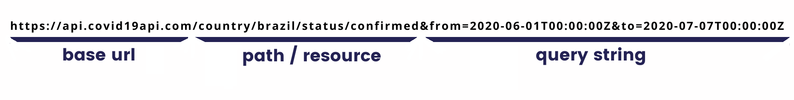

Trabalhando com API no R
10 de Julho de 2020
Introdução
Os dados é um dos elementos mais importantes de um projeto de Ciência de dados. E existem várias formas de se obter os dados, mas as APIs que é uma sigla para o termo em inglês “Application Programming Interface” ou traduzindo para o português “Interface de Programação para Aplicativos”, vem se tornando uma das formas mais comuns de se obter os dados, onde iremos fazer uma requisição a uma URL, que por sua vez, nos retornará uma resposta e uma das grandes vantagens de utilizar APIs é que ela não depende de uma linguagem de programação, mas todos os exemplos que mostrarei aqui, serão utilizando a linguagem R. E antes de exemplificar como podemos acessar e criar uma API no R, vamos entender algumas coisas relacionadas a API de forma geral.
Endpoint
O endpoint é uma URL que é um caminho, onde iremos fazer uma requisição e que possui a seguinte estrutura.
Base URL: É o início da URL da requisição, que se repetirá em qualquer requisição que iremos fazer.
Ex.:https://api.covid19api.com/Resource ou Path: É o tipo de informação que estamos buscando.
Ex.:https://api.covid19api.com/country/brazil/status/confirmedQuery String: São os parâmetros da requisição, onde poderemos utilizar para fazer filtros, paginação, versionamento, ordenação e etc…
Ex.:https://api.covid19api.com/country/brazil/status/confirmed&from=2020-06-01T00:00:00Z&to=2020-07-07T00:00:00Z

Métodos
Os métodos nos ajudam no momento da requisição a informar o tipo de ação que queremos fazer naquele momento e esses são os principais métodos existentes:
- GET: Busca os dados.
- POST: Envia os dados.
- PUT/PATCH: Atualiza os dados.
- DELETE: Exclui os dados.
Código de status HTTP
HTTP ou do inglês "Hyper Text Transfer Protocol" é um protocolo de comunicação de dados do mundo da internet. Onde existem padrões de códigos de status, que facilitam o entendimento das respostas das APIs.
Os códigos de respostas mais utilizados são:
- 200: Requisição foi bem sucedida.
- 201: Requisição foi bem sucedida e um novo recurso foi criado como resultado.
- 204: Não há conteúdo para enviar para esta solicitação.
- 400: Essa resposta significa que o servidor não entendeu a requisição.
- 404: O servidor não pode encontrar o recurso solicitado.
- 500: O servidor encontrou uma situação com a qual não sabe lidar.